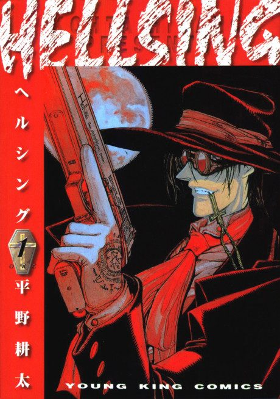

Anime

Manga2001 · Action, Horror, Supernatural
Hellsing
HELLSING
AniList7.2
Animeter—
Episodes13 ep
MangaOwn end
Anime finished. Where does the manga pick up?
StatusOwn ending
The 2001 TV series takes the characters and setting but tells a different story and ending, because the manga was unfinished. The 2006 OVA series follows the manga much more closely, so read the manga (92 chapters, finished) from the start for the real story.